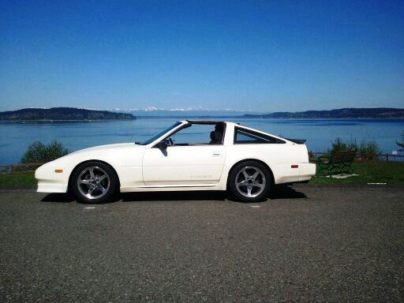
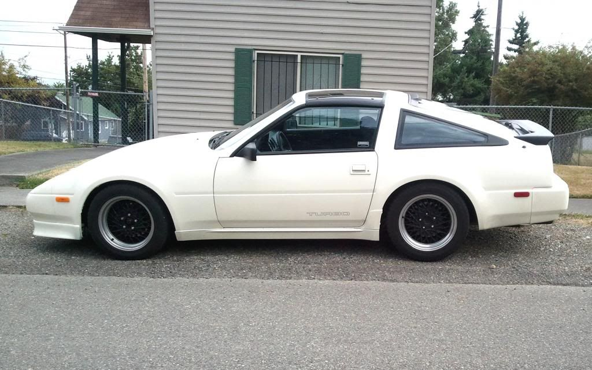
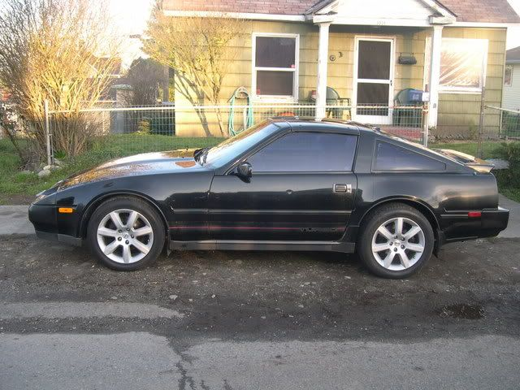

-
I bought a 1987 NA Z31 2 Seater a few months ago. I recently changed the timing belt, crank, and cam seals, waterpump, pvc valve, plugs, wires, rotor, distributor cap, thermastat, and put on a new rack and pinion. Now I'm onto doing more suspension stuff. The suspensions seems off to me so I am thinking of getting new struts and springs? I'm wondering what kind my car can use? I want a comfortable ride, but also would like some performance. Is there a good middle ground spring/struts to choose? I think I would also like to drop it alittle for aesthetics. Any recommendations? I'm currently in an automotive class, my second week, but I am a complete noobie. I changed struts/springs before but it was just oem stuff on a S13.
I've read around a lot, but I'm not sure how much to lower the car, what type of spring, and strut so I don't slam every bump in the road, but still feel good cornering. Right now the car feels off, not sure exactly what it is, sort of like it tracks bath and forth, and it doesn't feel very stable on the road. Not sure what the cause is. I know my front tires have inner wear but I just got the rack and pinion new inner tie rods/alignment done. -
The floaty feel is probably worn out bushings. Get the prothane kit to replace those. I recommend bilstein struts and shocks. For springs it depend on how low you want it. If you stock height you could look for a set of SS springs. If you want lower Suspension Techniques (ST) are the best but hard to find. Eibachs are supposed to be pretty good and are progressive rate so they should give you a decent mix of ride and handling, though they are a compromise so you get the best of neither.Prius… because Pretentious wouldn't fit across the back of the car…
Cheap, Fast, Reliable - pick any two
My 1986 Turbo Build -
9 times out of 10 on these cars bad tracking or a car that feels like it sways back and forth on a straight road is caused by bad subframe bushings.
Once they go bad, they allow the subframe to actually move around which causes a few degrees of misalignment anytime you accelrate, brake or turn. -
The "floaty feeling" is a good way to describe how it feels. I think I will plan to replace the bushings this next month. I have a couple of the questions still…
1. Is there a difference between prothane and polyurethane bushings/if there is what is it? (Any links where to buy)?
2. Anyone have a picture with a Z31 lowered to about the height a suspension techniques spriings would make the car look? Would there be any clearance issues? I want to lower but not enough to cause any clearance problems
3. I keep reading that Eibach are terrible, but then again I don't plan on racing, I just would like a mix of comfort but I don't want to loose a sporty feel either?
Thanks for all the help
-
1.There is no difference between prothane and polyurethane bushings. Prothane is a brand name.
2. This is my Shiro with suspension techniques springs. When using lowering springs, you gain negative camber and should do the rear control arm camber mod to correct it. http://www.thezstore.com/page/TZS/CTGY/classic20e


3. Below is a picture of one of my old cars with Eibach's. Theys are not terrible, that's just an opinion from people who want different spring rates for more aggressive driving. They are a better than good OEM replacement if you use them for DD and light sport use. Your should combine them with a good quality strut/shock brand.

1988 300ZX Turbo, Shiro Special #760
1988 300ZX Turbo Automatic (wife's car)
1991 Hard-body 2WD
http://zccw.org/zccw/?page_id=1215 -
Replace
Ball joints
Inner and outer tie rods
Control arm and tension rod bushing with polyurethane
Rear cross member bushing with polyurethane
Differential mount
Then get a set of Eibach springs and Tokico HP (blue) struts. Awesome combination of performance and comfort.86na - BlueZ
Shiro #366 - Kouki Monster
85t - Mr Tickles -
+1 on Eibach springs for spirited daily driving and the occasional hoon or just-for-fun autoX. They are that sweet spot between comfort and performance and lower the car like an inch and a bit once they break in - looks stock just a little better. And new bushings everywhere make all the difference in the world on our cars, and it's not like an old BMW where you have to replace every bushing in the car every 10,000 miles. You'll never have to do it again.
One note - if ride quality is a thing for you, depending where you live you might want to look at going with new stock rubber bushings for the rear-x-member if you can find them. If you are somewhere with actual winter and you have seriously fucked up roads from frost heaving and shit, poly rear cross-member bushings are pretty stiff. If you're south of that, poly all the way. -
Can anyone point in me to a link to what I need to buy specifically? Is there a master kit including every bushing I was advised to replace? Thanks… -
Seriously though? How far do you expect us to spoon feed you? After we provide the links will the next request be to install them for you too?
I'll give you one link, only to support ASCO. Past that… learn to google.
http://store.acadianasportscars.com/su056-0007Prius… because Pretentious wouldn't fit across the back of the car…
Cheap, Fast, Reliable - pick any two
My 1986 Turbo Build -
When I see threads or questions that I find annoying I avoid it…plain and simple.
http://www.energysuspensionparts.com…san+300ZX+1987
We must foster an environment where people don't cringe at the idea of asking questions.Cha iro
enjoy building it yourself.
if it fails, fuck it.
at least you gave it a whirl. -
We should also foster and environment where people can think for themselves. It's one thing to be helpful, it's something else entirely to hold someone's hand through the entire process of purchasing parts for their car.Originally posted by Augustus Maximus
Had someone taken a minute to search, virtually everything that was said in this thread was covered here: http://z31performance.com/showthread…pension+basics
I also typed "z31 lowering springs" into Google and got a link to STs on eBay and Eibachs from MSA on the first page of results.Prius… because Pretentious wouldn't fit across the back of the car…
Cheap, Fast, Reliable - pick any two
My 1986 Turbo Build -
My apologies. I didn't realize "googling" was considered thinking for oneself these days. Googling results had different opinions, some said Tokiyo Illuminas are the best you can go, others said, No way Bilstein are the best and Illumina's don't last, now this thread is saying Tokiyo Blue's, and that Eibach's aren't bad, when virtually every site I have read said Eibach are shit. One page could have been written 8 years ago, one could be 2 months ago.
So I'm asking questions in the here and the now. If you don't like it why not just ignore it instead of acting like a pretentious jackass? You may be more knowledgable than me, and if you think that makes you some car god, just ignore my questions. -
I refrain from bashing anything suspension related because of that exact problem, there is so much antiquated or outright untrue statements, mixed with everyone's subjective opinions, all tempered by "traditions"
Asking for new opinions is not a bad idea… unfortunately they are just as bad as the old opinions generally haha -
Don't take it personal, at least you asked here and not the facebook page.
Years ago I was told Illuminas and ST's would be way too harsh, but i love them.
Ride quality of a spring and strut combo are heavily influenced by tire size/width.
For example, my setup still has a floaty feeling with the stock wheels but is much tighter
with the setup in my sig photo.
Like anything else, individual results may vary…
84 AE/Shiro #683/Shiro #820/84 Turbo -
Look at it like this, koni and bilstein are the premium struts, kyb and tokico are the middle players, and everything else is the stock to mediocre class…
That said the coilover options are numerous, opinions are generally positive for any brand, regardless of quality, because the valving is generally matched for the springs, unlike most spring and shock combinations people piece together…
At the extreme end, things change ride quality immensely, rodend conversions instead of bushings, camber plates, rollcenter adjusters etc…
Then you get into the dynamics of larger brakes, larger wheels, ultra performance tires, pretty soon all the advice that worked well at one point is obsolete

Copyright © 2006–. All rights reserved. Privacy Policy